Boat monitoring and alarming system
Modernising a technical interface for captains and mechanics.
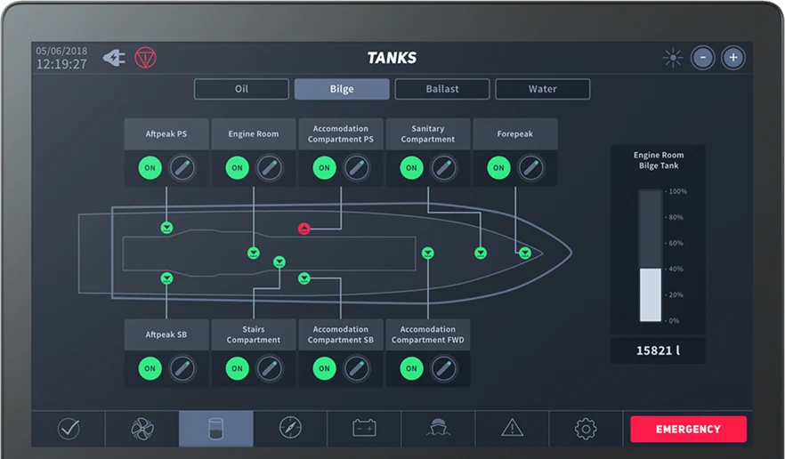
Outdated, unintuitive and hard to learn
Boat monitoring and alarming systems are outdated. The solutions on the market are unintuitive and hard to learn.
Modernising them and creating a great user experience would be a strong selling point. That's why the client, a boat manufacturer, reached out to a design agency.
Old interface
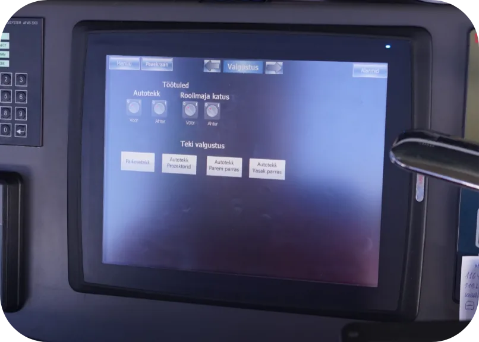
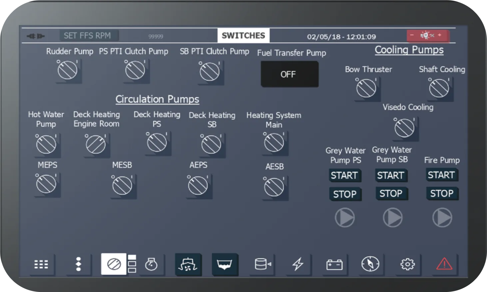
What the update needed to achieve
- Improve communication between machine and human
- Simple usability for all user groups
- Improved, simpler iconography
- A modernised interface that increases sales
- A shorter learning curve for the workforce
I was the project's designer, and a project manager led the collaboration with the client. Development was done in‑house.
Client workshop
We ran a workshop with the client to work out:
- working process and collaboration
- the system's target group
- the functionality to cover
- industry standards and special solutions
Going to where the work happens
We started with several qualitative research methods. First, a field study observed users interacting with the interface in their working environment. We also interviewed users and based our personas on the findings. Our target users were captains and mechanics.
Next, we took the UI apart. We wrote user stories and ran card sorting with the target group to work out the information architecture.
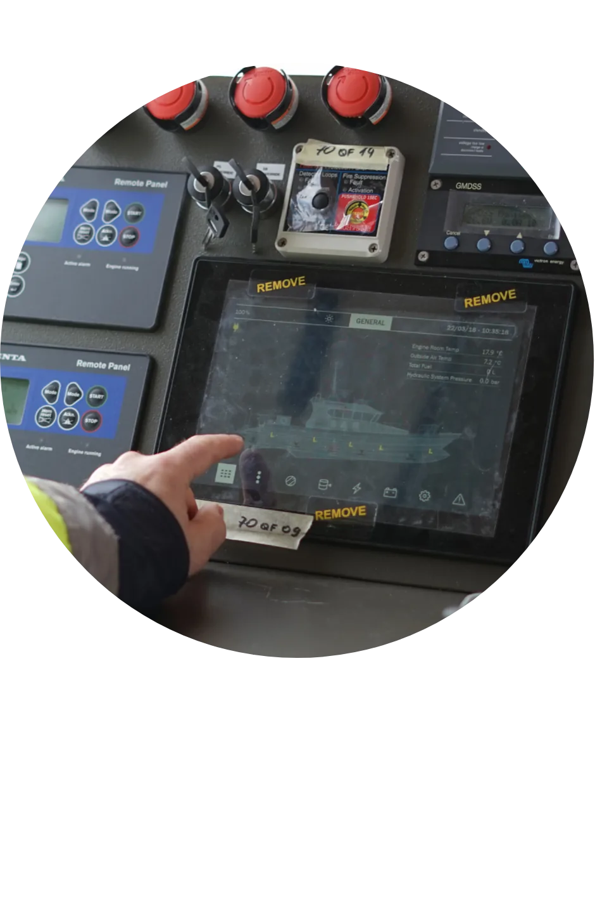
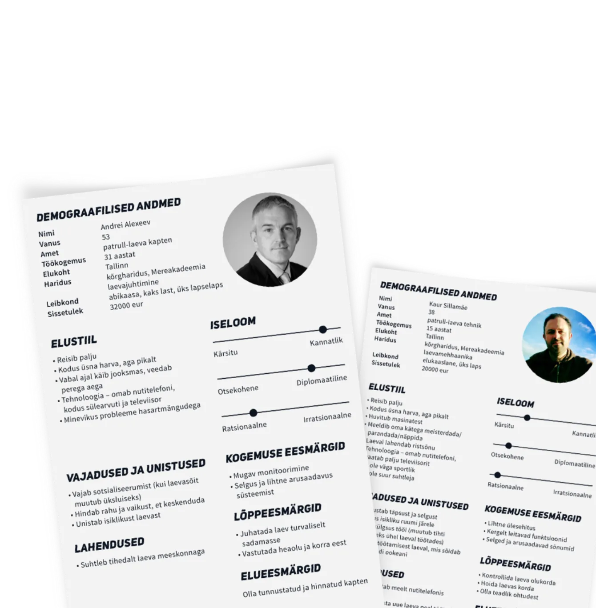
Raising fidelity as the IA settled
After the discovery phase it was time to build the first prototypes. I ran several rounds of usability testing, improved the interface after each one, and raised the fidelity as the information architecture became more stable.
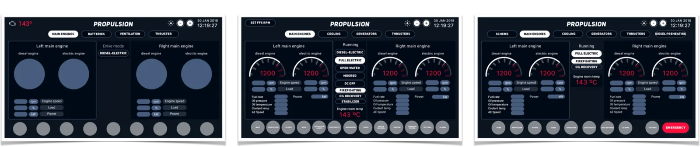
Prototype iterations of the propulsion view
Learning from the state of the art
To build a market‑leading product, competitive research was essential. It showed us industry standards and the state of the art, which helped us improve the IA, copy and iconography.
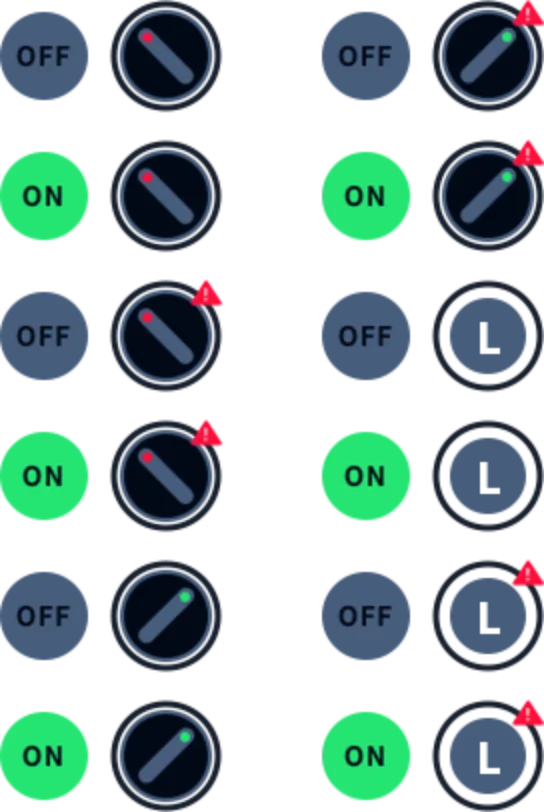
Designing for a unique platform
The platform was unique and didn't support effects like shadows, so the handover included a prototype, design specs and SVG assets. We also wrote design guidelines for certain behaviours.
The product was localised, so the font had to support every character. Readability needed extra care, so the font also had to have easily distinguishable characters.
A big step forward, built on collaboration
The subject was very specific and technical, so the project needed a lot of collaboration. It was hard to find people from the target group to test with and interview.
It was also hard to find time for collaboration and design QA with the boat manufacturer, who was busy launching a new boat. More frequent communication would have helped, but the delivered product was still a big step forward for the industry.
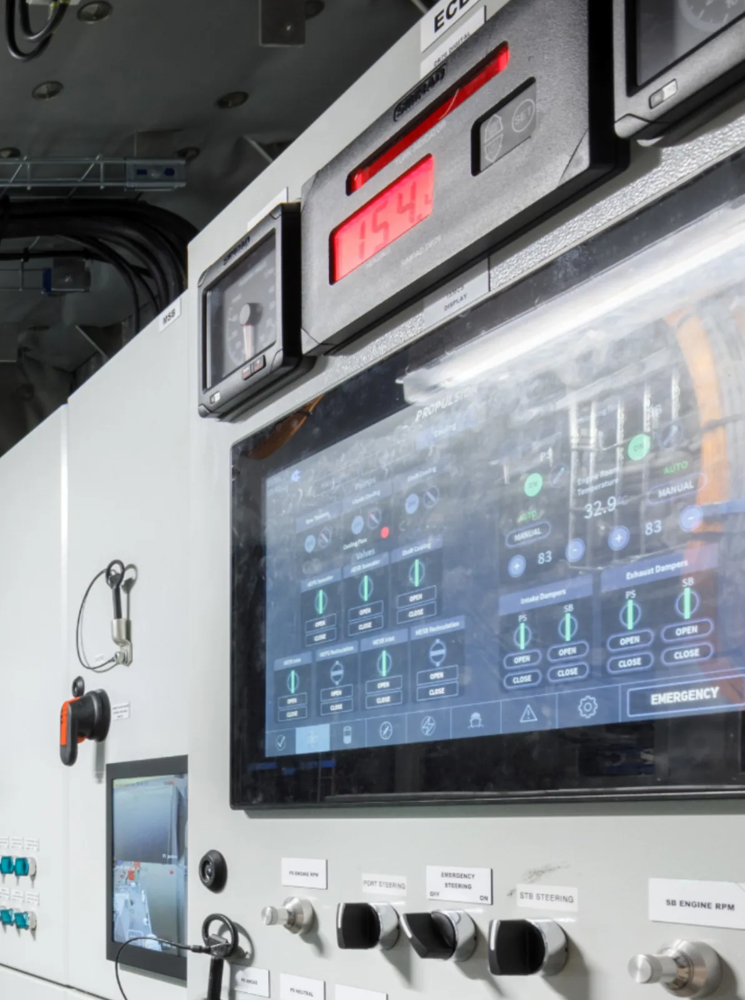
The new interface
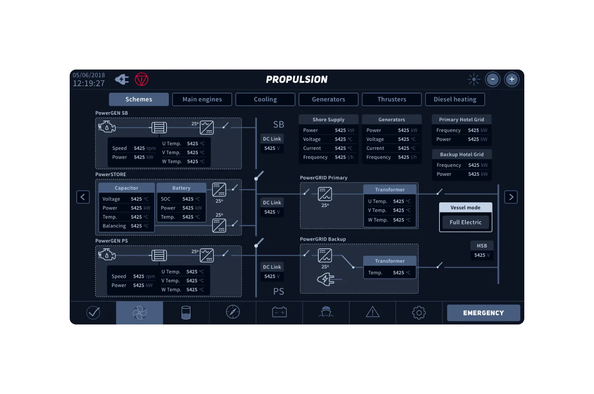
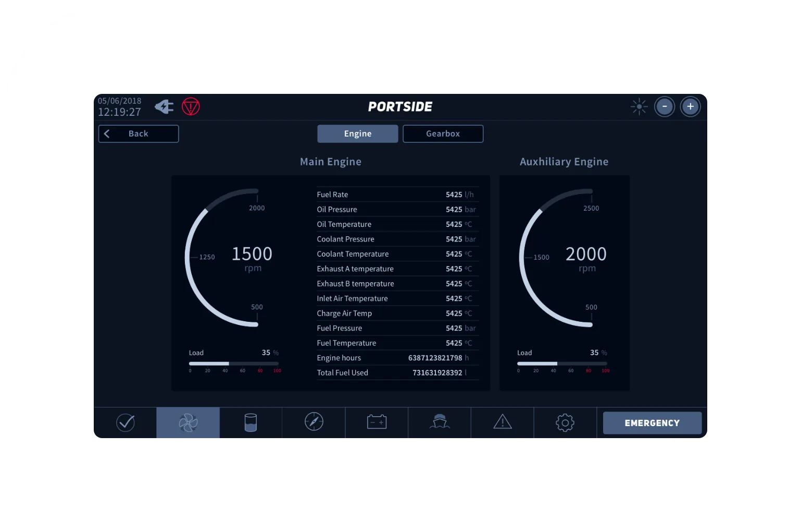